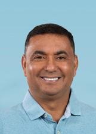
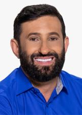

Rio de Janeiro
Quem ocupa os cargos hoje e quem assume em 2027.
Resultado provisórioTSE, capturado em 29/10/2026
Poder Executivo
Administra o governo e executa as leis: saúde, educação, segurança, estradas e o orçamento.
Governador
Cláudio CastroPL · 4.930.288 votos · eleito em 2022★ Novato›Quem comanda cada cidade do estado.
Poder Legislativo
Cria as leis, aprova o orçamento e fiscaliza o Executivo.
Senadores (3)
Carlos PortinhoPSD · no cargo desde 2020›Flávio BolsonaroPSL · 4.380.418 votos · eleito em 2018★ Novato no Senado›RomárioPL · 2.384.331 votos · eleito em 2022✓ Reeleito›Deputados federais (46)
Bancada federal por partido
46 cadeiras de Rio de Janeiro
- PL1124%
- UNIÃO613%
- PSOL511%
- PSD49%
- PT49%
- PP37%
- REPUBLICANOS37%
- MDB24%
- PCDOB24%
- PDT12%
- PODE12%
- PROS12%
- PSB12%
- PTB12%
- SOLIDARIEDADE12%
Do partido com mais cadeiras para o com menos, não por posição política. Cada partido usa a sua cor de marca; cinza é partido sem cor registrada na fonte.
Deputados federais (46): buscar e ver a lista
Deputados estaduais e distritais (70)
Assembleia por partido
70 cadeiras de Rio de Janeiro
- PL1724%
- UNIÃO811%
- PT710%
- PSD69%
- PSOL57%
- PP46%
- REPUBLICANOS34%
- SOLIDARIEDADE34%
- MDB23%
- PDT23%
- PODE23%
- PROS23%
- PSB23%
- AGIR11%
- AVANTE11%
- MOBILIZA11%
- PATRIOTA11%
- PCDOB11%
- PSC11%
- PTB11%
Do partido com mais cadeiras para o com menos, não por posição política. Cada partido usa a sua cor de marca; cinza é partido sem cor registrada na fonte.
Deputados estaduais e distritais (70): buscar e ver a lista

Renato MachadoPT · 63.803 votos · eleito em 2022★ Novato›Renato MirandaPL · 54.341 votos★ Novato›Rodrigo AmorimPTB · 47.225 votos · eleito em 2022✓ Reeleito›Rosenverg ReisMDB · 131.308 votos✓ Reeleito›Samuel MalafaiaPL · 72.056 votos · eleito em 2022✓ Reeleito›Tande VieiraPROS · 45.785 votos · eleito em 2022★ Novato›Thiago GagliassoPL · 102.038 votos★ Novato›Thiago RangelPODE · 31.175 votos · eleito em 2022★ Novato›Tia JuREPUBLICANOS · 63.373 votos✓ Reeleito›Val CeasaPATRIOTA · 69.034 votos · eleito em 2022✓ Reeleito›Valdecy da SaúdePL · 72.250 votos · eleito em 2022✓ Reeleito›Verônica LimaPT · 55.738 votos★ Novato›Vinicius CozzolinoUNIÃO · 70.270 votos★ Novato›Vitor JuniorPDT · 43.958 votos · eleito em 2022★ Novato›YuriPSOL · 25.479 votos★ Novato›ZeidanPT · 50.743 votos✓ Reeleito›Índia ArmelauPL · 57.582 votos★ Novato›Os eleitos de cada cidade do estado.
Poder Judiciário
Julga os conflitos e garante que as leis sigam a Constituição.
Os desembargadores do Tribunal de Justiça e do Tribunal Regional Eleitoral. Não são eleitos.
Poder Executivo
Administra o governo e executa as leis: saúde, educação, segurança, estradas e o orçamento.
Governador
Douglas RuasPL · 4.271.199 votos★ Novato›Quem comanda cada cidade do estado.
Poder Legislativo
Cria as leis, aprova o orçamento e fiscaliza o Executivo.
Senadores (3)
Carlos JordyPL · 3.912.405 votos★ Novato no Senado›Carlos PortinhoPL · 4.264.932 votos★ Novato no Senado›RomárioPL · 2.384.331 votos · eleito em 2022✓ Reeleito›Deputados federais (46)
Bancada federal por partido
46 cadeiras de Rio de Janeiro
- PL1533%
- PT613%
- PP511%
- PSD49%
- PSDB49%
- PSOL49%
- PCDOB24%
- MDB12%
- NOVO12%
- PDT12%
- REPUBLICANOS12%
- SOLIDARIEDADE12%
- UNIÃO12%
Do partido com mais cadeiras para o com menos, não por posição política. Cada partido usa a sua cor de marca.
Deputados federais (46): buscar e ver a lista
Deputados estaduais e distritais (70)
Assembleia por partido
70 cadeiras de Rio de Janeiro
- PL2130%
- PSD913%
- PT913%
- PP57%
- PSOL57%
- UNIÃO46%
- REPUBLICANOS34%
- MDB23%
- PDT23%
- PSB23%
- SOLIDARIEDADE23%
- AGIR11%
- DC11%
- NOVO11%
- PCDOB11%
- PRD11%
- PSDB11%
Do partido com mais cadeiras para o com menos, não por posição política. Cada partido usa a sua cor de marca; cinza é partido sem cor registrada na fonte.
Deputados estaduais e distritais (70): buscar e ver a lista

Giovani RatinhoMDB · 46.380 votos★ Novato›Giselle MonteiroPL · 44.532 votos✓ Reeleito›Guilherme DelaroliPL · 166.374 votos✓ Reeleito›Guilherme SchlederPSD · 54.760 votos✓ Reeleito›Gustavo TutucaPP · 56.334 votos✓ Reeleito›Jair BittencourtPL · 73.722 votos✓ Reeleito›JariPSB · 34.199 votos✓ Reeleito›Jorge Felippe NetoPL · 58.508 votos✓ Reeleito›Joyce TrindadePSD · 37.088 votos★ Novato›João PiresPSD · 90.195 votos★ Novato›Julio RochaAGIR · 51.609 votos✓ Reeleito›LeandroREPUBLICANOS · 49.013 votos★ Novato›Leonel de EsquerdaPT · 44.597 votos★ Novato›LibrelonREPUBLICANOS · 57.409 votos✓ Reeleito›Luciana BoiteuxPSOL · 44.928 votos★ Novato›Luiz PauloPSD · 43.720 votos✓ Reeleito›Léo Vieira FilhoPSDB · 72.939 votos★ Novato›Marcelo DinoPL · 57.982 votos↺ Retorno›Marina do MSTPT · 66.167 votos✓ Reeleito›Munir NetoSOLIDARIEDADE · 52.808 votos✓ Reeleito›Márcio CanellaUNIÃO · 197.178 votos✓ Reeleito›Márcio GualbertoPL · 50.804 votos✓ Reeleito›Nelsinho RuasPL · 70.552 votos★ Novato›Poubel FilhoPL · 42.871 votos★ Novato›Rafael NobreUNIÃO · 76.706 votos✓ Reeleito›Rafael PiccianiUNIÃO · 46.686 votos↺ Retorno›Raone FerreiraPT · 28.377 votos★ Novato›Renata SouzaPSOL · 176.871 votos✓ Reeleito›Renato MirandaPL · 56.329 votos✓ Reeleito›Rodrigo MedeirosPL · 65.530 votos★ Novato›Rosenverg ReisMDB · 139.866 votos✓ Reeleito›SerginhoPDT · 43.664 votos★ Novato›Soldado TobiasPRD · 37.969 votos★ Novato›Tia JuREPUBLICANOS · 47.302 votos✓ Reeleito›Vantoil MartinsPSB · 39.179 votos★ Novato›Verônica LimaPT · 85.421 votos✓ Reeleito›Vinícius CozzolinoPSD · 49.353 votos✓ Reeleito›Yuri MouraPSOL · 43.336 votos✓ Reeleito›ZeidanPT · 43.115 votos✓ Reeleito›Índia ArmelauPL · 248.504 votos✓ Reeleito›Os eleitos de cada cidade do estado.
Poder Judiciário
Julga os conflitos e garante que as leis sigam a Constituição.
Os desembargadores do Tribunal de Justiça e do Tribunal Regional Eleitoral. Não são eleitos.
Como ler
★ Novato Primeiro mandato nesta casa (Câmara ou Senado).
✓ Reeleito Já estava no cargo e foi eleito de novo.
↺ Retorno Já teve mandato, mas estava fora.
Sem selo Não conseguimos ligar a pessoa a um mandato anterior. Isso não quer dizer que seja novata: simplesmente não afirmamos nada.
Provisório Só é confirmado na diplomação.